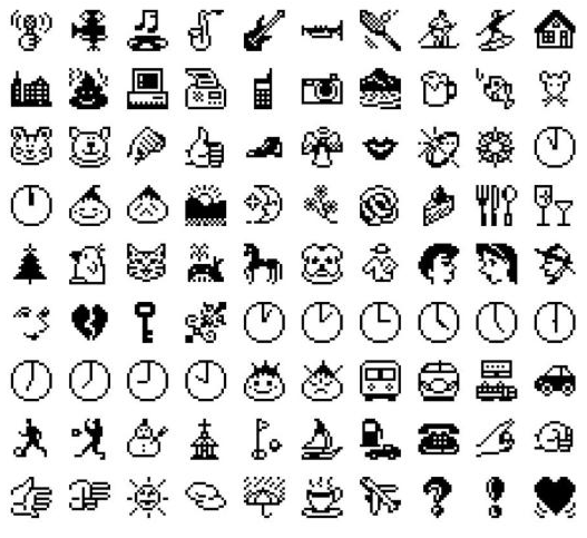

Емодзі — це маленькі піктограми або символи, які допомагають передавати емоції, дії та настрої в текстових повідомленнях. Вони роблять спілкування більш виразним, коли слова не можуть передати весь настрій. Сьогодні емодзі це невід’ємна частина цифрової культури і допомагають легко спілкуватися по всьому світу.
Ранні емодзі ❀.• *₊°。 ❀°。

Перші емодзі з’явилися ще в 1980-х – на початку 1990-х років, хоча точна історія трохи заплутана. Раніше вважали, що перші емодзі створив DoCoMo у 1999 році, але насправді компанія SoftBank випустила свій набір уже в 1997 році. На телефоні SkyWalker DP-211SW було 90 маленьких монохромних емодзі: цифри, символи спорту, погоди та фаз місяця. Через те, що телефон продавався мало, ці емодзі були рідко відомі.
Більш популярний набір створив Шігетака Куріта у 1999 році для DoCoMo i-mode. Його 176 кольорових емодзі були натхненні японською мангою, китайськими ієрогліфами та піктограмами з вулиць. Вони включали обличчя, смайлики і навіть елементи каомоджі. Ці емодзі стали основою для багатьох сучасних символів, а роботи Куріти навіть показані в Музеї сучасного мистецтва в Нью-Йорку.
Одночасно інші компанії, наприклад Nokia та японський бренд au (KDDI), почали додавати свої набори маленьких іконок у телефони. Багато сучасних емодзі, які ми використовуємо зараз — про погоду, спорт або дії — беруть початок саме з цих ранніх наборів.
Поширення у світі ❀.• *₊°。 ❀°。
Спочатку емодзі використовувалися лише в Японії, але з розвитком мобільних технологій вони почали швидко поширюватися по всьому світу. Важливим кроком стало їх включення до стандарту Unicode — це дозволило однаково відображати емодзі на різних пристроях і платформах.
Після цього великі компанії почали активно використовувати емодзі у своїх продуктах, і вони стали частиною повсякденного спілкування. Люди почали додавати їх у повідомлення, соцмережі, коментарі, а іноді навіть замінювати ними слова.
Технічна підтримка ❀.• *₊°。 ❀°。
Спочатку емодзі були доступні лише в Японії, але після включення до стандарту Юнікод їх почали використовувати по всьому світу. Вони з’явилися на iPhone, Windows Phone та в Gmail (з 2009 року), а також у Mac OS X (з версії 10.7).
Зараз емодзі підтримують популярні месенджери — WhatsApp, Telegram, Discord, Skype та інші. На Android їх підтримка залежить від версії системи (повноцінно — з Android 4.4), а в Windows кольорові емодзі з’явилися з версії 8.1.
Важливо: емодзі можуть виглядати по-різному на різних пристроях, що іноді призводить до непорозумінь. На старих системах (наприклад, Windows 7 і нижче) вони можуть взагалі не відображатися — показується лише квадратик.
Емодзі сьогодні ❀.• *₊°。 ❀°。
Сьогодні емодзі — це важлива частина цифрової культури. Існують тисячі різних символів: обличчя, жести, тварини, їжа, предмети, транспорт і багато іншого. Вони використовуються не тільки в особистому спілкуванні, а й у рекламі, дизайні та навіть у навчанні.
Щороку додаються нові емодзі, щоб відображати сучасний світ, різні культури та різноманітність людей. Завдяки цьому емодзі залишаються актуальними і продовжують розвиватися разом із суспільством.
❤️
Червоне Серце
😂
Обличчя зі сльозами радості
🔥
Вогонь
🤣
Кататися по підлозі від сміху
🥰
Усміхнене обличчя з сердечками
🙏
Складені руки
🤔
Мислене обличчя
🎉
Святкова хлопавка
💪
Зігнутий біцепс
👀
Очі
❀.• *₊°。 ❀°。
Емодзі значно змінили спосіб, у який люди спілкуються в інтернеті. Вони роблять повідомлення більш емоційними, зрозумілими та цікавими. Сьогодні це не просто доповнення до тексту, а повноцінний інструмент спілкування, який об’єднує людей по всьому світу.